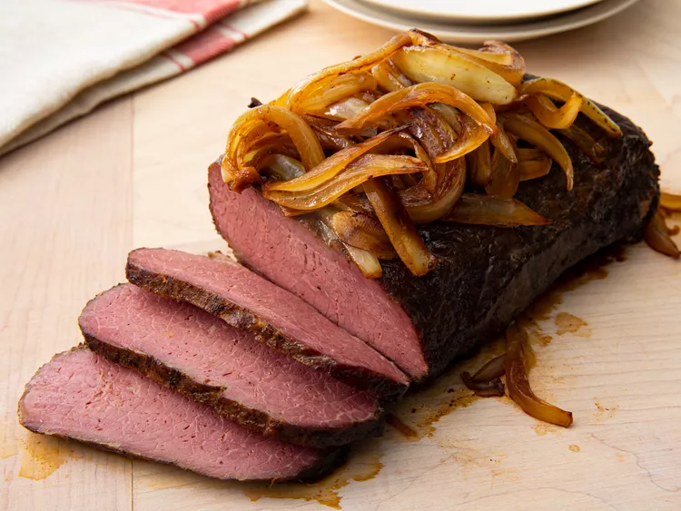

Braised Corn Beef Brisket

Ingredients
- 1 5 pound flat-cut corned beef brisket
- 1 tbsp browning sauce
- 1 tbsp vegetable oil
- 1 onion, sliced
- 6 cloves garlic, sliced
- 2 tbsp water
Steps
- Preheat oven to 275 degrees F (135 degrees C)
- Discard flavoring packet of corned beef. Brush brisket with browing sauce.
- Heat vegetable oil in a skillet over medium-high heat. Brown on both sides, 5 to 8 mins per side.
- Place brisket on a rack set in a roasting pan. Scatter onion and garlic over the brisket and add water. Cover tightly with aluminum foil.
- Roast in a preheat oven until the meat is tender, for about six hours.